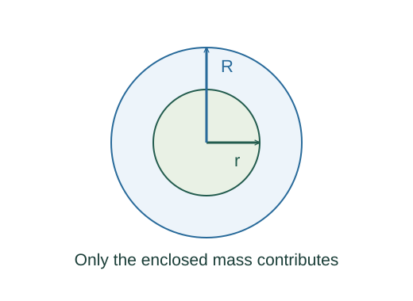

Derive spherical gravity and orbital energy
For a shell of radius R and total mass M, symmetry gives U = −GMm/2 times the integral from −1 to 1 of du/√(r² + R² − 2rRu). The integral is [(r + R) − |r − R|]/(rR), hence U = −GMm/max(r,R). Differentiating gives zero interior force and the exterior inverse-square field.
What the symbols mean
M,R: spherical body mass and radius; a: orbital semimajor axis; r: centre-to-particle distance; h: specific angular momentum.
When this applies
Newtonian inverse-square gravity and superposition; uniform density for the interior linear field; an isolated bound two-body orbit with m ≪ M.
Developing the argument

Evaluate the spherical shell integral
For a shell of radius R and total mass M, symmetry gives U = −GMm/2 times the integral from −1 to 1 of du/√(r² + R² − 2rRu). The integral is [(r + R) − |r − R|]/(rR), hence U = −GMm/max(r,R). Differentiating gives zero interior force and the exterior inverse-square field.
Count only the enclosed mass inside a solid sphere
Shells outside r give zero force; uniform density gives Menc = M(r/R)³. Newton’s law then gives the local acceleration and force.
Evaluate circular-orbit energy
Circular force balance gives mv² = GMm/r. Thus K = GMm/(2r), and adding U = −GMm/r gives the total.
Use the two turning points of an ellipse
At pericentre rp and apocentre ra radial speed vanishes. Equate E/m = h²/(2rp²) − GM/rp to the corresponding expression at ra. Eliminating h yields E/m = −GM/(rp + ra).
Add pair energies once
For multiple point masses, assemble each pair once, just as for electric energy, with every pair gravitationally attractive.
A worked example
A uniform sphere’s inward acceleration is zero at its centre and rises linearly to GM/R² at its surface.
Derivation behind this calculation ↗A point to keep straight
The exterior point-mass result needs spherical symmetry; the linear interior result additionally needs uniform density.
Check the assumptions and derivation ↗